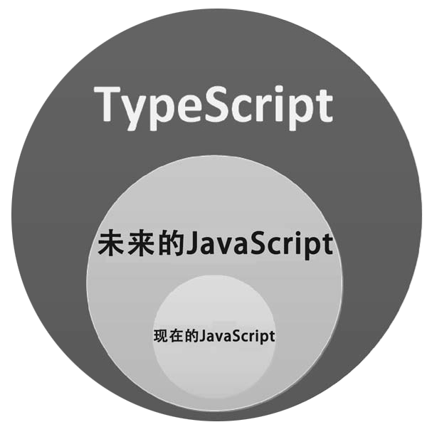
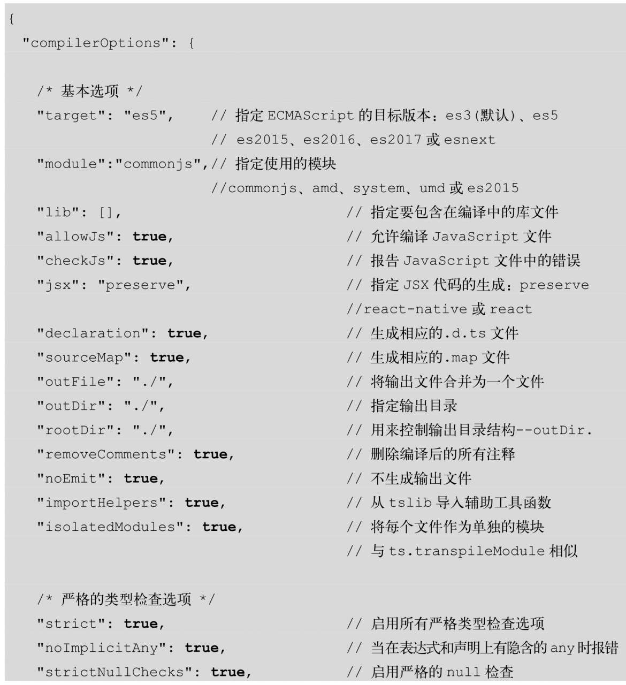
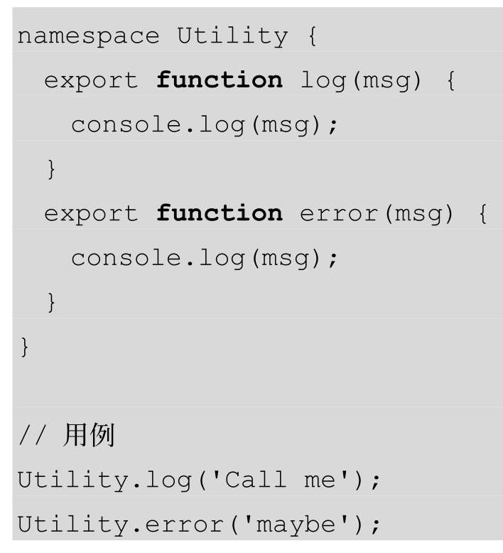
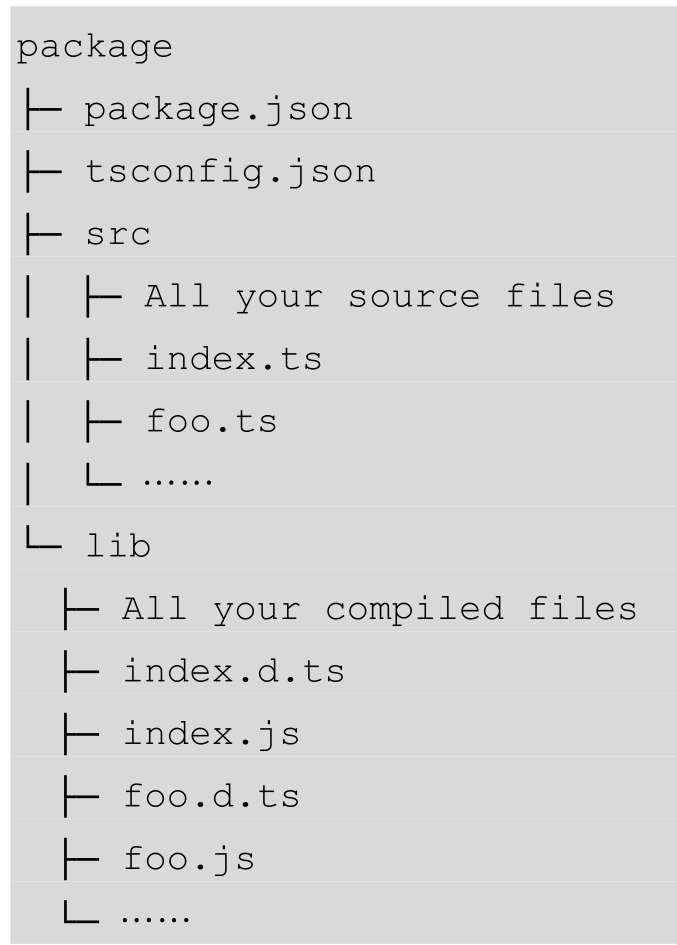
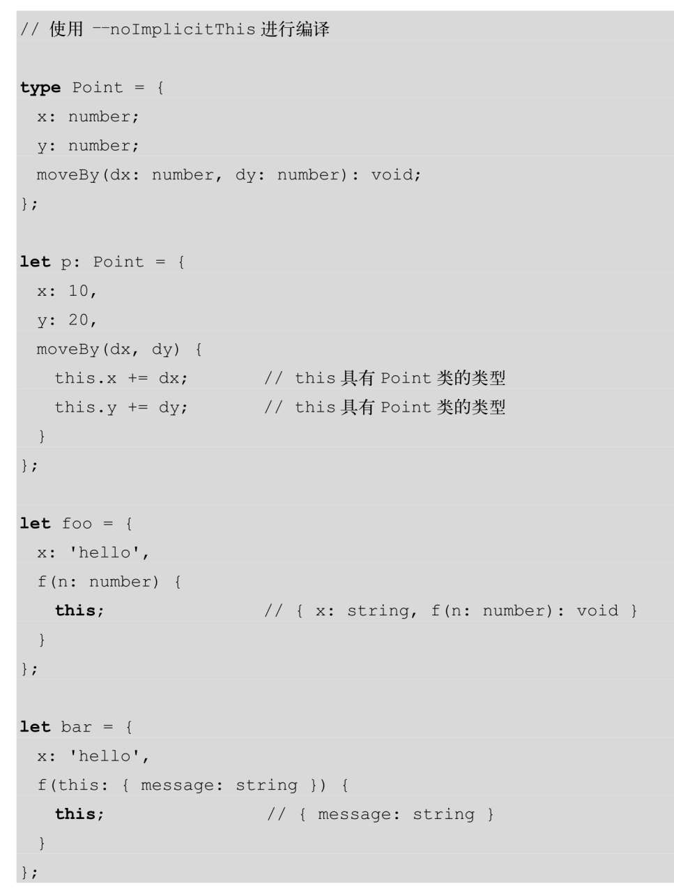

《深入理解TypeScript 》
学习地址个人学习笔记，以下内容与原内容有微小区别；
-
前言
- TypeScript趋势图
- TypeScript是一种由微软开发的、开源的编程语言，自2012年10月发布首个公开版本以来，它已得到了人们的广泛认可。
-
第一章.为什么要使用TypeScript
- 微软推出TypeScript 为了实现两个目标
- 为JavaScript提供可选的类型系统；（提高代码质量和可维护性）
- 兼容当前及未来的JavaScript特性；（ES6、ES7、自定义等新特性支持，提高开发效率）
-
第二章.JavaScript常见语法
- TypeScript 和 JavaScript 的关系
- JavaScript 语法
相等(==, ===)引用(对象、函数、数组、正则等都是一个引用)null 和 undefined（变量没有初始化 undefined, 变量不可用 null）this(this与函数调用上下文相关，箭头函数断开这种上下文链接)闭包(闭包是指一个函数有权利访问定义它外部作用域的任何变量)数字(javascript只有一个数据类型：双精度64位number; .1 + .2 = 0.30000000000000004, big.js 修正或未来ES语法支持)truthy(定义在某些位置上被评估为true的代码)
-
第三章.JavaScript新语法特性
- 3.1 类
1.继承（extends）2.静态（static）3.访问修饰符4.抽象5.构造器（constructor）6.属性初始化7.IIFE发生了什么8.__extendsJavaScript中的所有对象都包含一个__proto__成员.JavaScript中所有的函数都有一个prototype属性，而在prototype上有一个指向函数本身的构造器属性。1)d.prototype.__proto__=b.prototype2)d.prototype.__proto__=b.prototype的重要性- 3.2 箭头函数
-
1.箭头函数的用处: 简洁， this 拥有上下文;
-
2.箭头函数是危险的: 如果你想让this成为调用时的上下文，你并不应该使用箭头函数。
-
3.箭头函数和使用this库: _self临时变量处理；
-
4.箭头函数和继承：子类不能通过super重写父类的this.xxx函数，super只适用于原型成员；通过在子类中重写函数来绕过这条规则
-
5.快速返回对象；
箭头函数作用：1、简洁； 2、包含了this的意义， 包含了argument意义；一位智者曾经说过：我讨厌JavaScript，因为它太容易丢失this的意义。胖箭头函数通过使用捕获上下文的this的意义的方式，修复了此问题.- 3.3 rest 参数
rest参数，即用...+参数名的形式表示最后一个参数，能让你在函数中快速获取多个参数，并将它们转化为数组;- 3.4 let
-
1.函数会创建新的作用域;(没使用 ES6 或 TypeScript 唯一隔离作用域方式)
-
2.生成JavaScript; （ES6、TypeScript使用let后编译代码解析）
-
3.switch;
-
4.闭包中的let: 循环调用函数问题， IIFE模式：（function（）{/*body*/}）（）；使用let 轻松解决；
- 5.小结：let对绝大多数代码都非常有用。它可以极大地加强代码的可读性，并能降低发生错误的概率。
TypeScript和ES6推荐你在一个真实的块作用域内使用let来定义变量;用let代替var，可以让你得到一个与外界变量相隔离的、真实的、唯一的元素.- 3.5 const
- 1.const 必须初始化;
- 2.赋值符号的左边不能是一个常量;
- 3.块作用域;
- 4.深层次的不变性;
const是ES6/TypeScript提供的一个非常受欢迎的功能。它可以让你创建不可变的变量。- 3.6 解构
-
1.对象解构
let rect = { x:0, y: 40, width: 15, height: 20 };
let { x, y, width, height } = rect;
console.log(x, y, width,, height); -
2.数组解构如何在不使用第3个变量的情况下交换两个变量:
let x = 2, y = 3;
[x,y] = [y, x];
console.log(x, y); -
3.生成JavaScript以上数组解构demo代码，编译成原生JavaScript解析；（还是使用了第三个变量[狗头]）
-
4.小结: 通过减少代码的体积并使它具有更清晰的目标，解构可以使代码的可读性和可维护性大大提高。数组解构可以让你像使用元组一样使用数组。
TypeScript支持对象解构和数组解构。字面量的意思是分解结构，即会打破原有结构.- 3.7 扩展运算符
- 1.apply: fn.apply(null, args) 简洁写法： fn(...args)
- 2.在解构中使用：
- 3.数组扩展：扩展运算符允许你轻松地将扩展后的数组放入另一个数组；（concat简洁、增强版写法）
- 4.对象扩展：使用扩展运算符把一个对象放入另一个对象。
- 5.小结：apply是一个你经常在JavaScript中使用的功能，所以当有一个不需要在this代码关键字上使用“丑陋”的null的新语法时，感觉是非常棒的。此外，当你在部分数组上对数组进行操作时，这提供了一种简洁的语法，专门用于将数组移出（解构）或将其写入（分配）另外的数组。。
扩展运算符的主要目标是扩展数组或对象中的元素。- 3.8 for...of
- 1.生成JavaScript, 编译后是for (var i = 0; i < someArray.length; i++)
- 2.限制： 只能字符串 或 数组等有长度类型使用，别再拿来给JSON对象使用了！注意，将来的TypeScript版本可能会删除此限制。
- 小结：你可能会惊讶于迭代数组元素的次数。下次当你想这样做时，就让for...of来替你完成吧。这可能会让审核你的代码的人感到高兴。
JavaScript开发人员经常遇到的一个错误是：for...in不能迭代数组成员。但是，它会迭代传入对象的键名。如下面的例子所示，你期望得到9，2，5，但是实际得到了索引0，1，2。- 3.9 迭代
迭代本身不是TypeScript/ES6的功能。迭代是面向对象编程语言常见的设计模式。通常，它是一个实现接口的对象。迭代本身并不是TypeScript的功能，这些代码可以在没有明确实现Iterator和IteratorResult接口的情况下正常工作。而这对于使用常见的ES6接口来实现代码的一致性非常有用。ES6定义了iterable协议，如果它实现了Iterable接口，那么它就包含了[Symbol.iterator]。- 3.10 模板字符串
- 1.字符串插值；从一些静态字符串+一些变量中生成字符串时，你需要使用一些模板逻辑，这就是模板字符串名字的由来。
- 2.多行字符串；（吐槽：这里没写清楚， 还是得看回《ECMAScript6 入门》）
- 3.标记模板: 可以在模板字符串前放置一个函数，它被称为tag。它将预处理模板字符串及其占位符的表达式，然后返回一个值。
- 4.生成JavaScript；
- 5.多行字符串和字符串插值在任何语言中都是很受欢迎的。现在你可以在JavaScript中使用它们，这很棒，感谢TypeScript。标记模板允许你创建功能强大的字符串实用程序；
这些模板字符串使用反引号（即'），而不是使用单引号（’）或双引号（"）。设计模板字符串的目的有3个: 1)字符串插值;2)多行字符串;3)标记模板。- 3.11 Promise
-
1.回调函数风格的代码；使用基于回调的异步函数时，要记住以下两点:1)永远不要调用两次回调函数;2)永远不要抛出错误;
-
2.使用Promise处理异步和回调函数;1）创建一个Promise2）订阅Promise的状态3）Promise的链式调用4）TypeScript和Promise5）转换回调风格的函数以返回Promise6）重温JSON的例子
- 3.并行流程控制: Promise提供了一个静态的Promise.all函数，你可以使用该函数等待n个Promise完成。如果你提供一个含有n个Promise的数组，它将返回一个包含n个已resolved的值的数组.
-
4.将回调函数转为Promise: 将回调函数转为Promise，最可靠的方法是手写，例如将setTimeout转换为Promise形式的delay函数。
const delay = (ms: number) => new Promise(res => setTimeout(res, ms));
Promise类存在于许多现代的JavaScript引擎中，可以轻松地被polyfill。Promise的主要目的是用同步的代码替换异步/回调函数的代码。- 3.12 generators
- 1.惰性迭代器;
- 2.外部控制执行: 这是generators的一个真正令人兴奋的特性。它实际上可以让一个函数暂停执行，并将继续执行的权力交给调用者。
-
3.总结：yield允许一个generators函数暂停执行，并且将恢复执行的权力交给外部系统。外部系统可以将值推入generators函数体。外部系统可以将一个异常抛入generators函数体。
function*是一个用来创建generators函数的语法。调用一个generators函数将会返回一个generators对象。而这个generators对象只是遵循了迭代器的接口（即next、return和throw函数）。- 3.13 async/await
- 1.产生JavaScript
-
2.TypeScript对async/await的支持TypeScript从1.7版本之后开始支持async/await。异步函数以async关键字为前缀，await将暂停执行，直到异步函数返回Promise执行完成的结果，并且返回非Promise包装后的值。它只有在编译目标为ES6时支持async/await，并将其编译成ES6 generators。
使用Promise时，有一种方式告诉运行时的JavaScript暂停执行await关键字之后的内容，直到Promise从一个函数中执行完成。async/await在JavaScript/TypeScript中正是这么实现的，它的背后只是使用了generators。
-
第4章 TypeScript项目构成
- 4.1 编译上下文
tsconfig.json- 4.2 声明空间
1.类型声明空间class Foo{} interface Bar{} type Bas = {} 2.变量声明空间class Foo{}const someVar = Foo;class someOtherVar = 123;- 4.3 模块
1.全局模块: 当你开始在一个新的TypeScript文件中写下代码时，它处于全局命名空间中。2.文件模块: 在TypeScript文件的根级别位置含有import或export，那么它会在这个文件中创建一个本地的作用域。调用： CommonJS、AMD、ES模块，以及其他- 4.4 命名空间
确保创建的变量不会泄漏至全局变量：- 4.5 动态导入表达式
动态导入表达式是ECMAScript的一个新功能，它允许你在程序的任意位置异步加载一个模块。TypeScript 2.4 动态导入表达式将自动生成包块，并自动对最终生成的JavaScript代码进行拆分。
-
第5章 快速创建TypeScript项目
- 5.1 在Node.js中使用TypeScript
1.创建一个Node.js项目的package.json文件;2.添加TypeScript;3.为TypeScript选项初始化一个tsconfig.json文件，并添加一些选项;- 5.2 在浏览器中使用TypeScript
1.通用设置; 安装Node, Git;2.快速开始;打开GitHub网页，搜索“typescript-react”3.项目设置详解;4.发布应用;- 5.3 创建一个TypeScript模块
包所需的文件夹结构如下：
-
第6章 TypeScript类型系统
- 6.1 基本概念
1.基本注解;2.基本类型注解;3.数组注解;4.接口注解;5.内联类型注解;6.特殊类型;7.泛型;8.联合类型注解;9.交叉类型;10.元组类型;11.类型别名.- 6.2 迁移JavaScript代码至TypeScript
1.减少错误: 用any解决大部分报错问题2.第三方JavaScript代码： 创建一个vendor.d.ts文件作为开始（.d.ts文件扩展名指定这个文件是一个声明文件），然后向文件里添加东西。3.第三方npm模块: 与全局变量的声明相似，你可以快速定义一个全局模块。declare module 'jquery'- 6.3 @types
1.使用@types2.全局@types3.模块@types4.控制全局- 6.4 环境声明
1.声明文件2.声明变量- 6.5 接口
1.类可以实现接口2.注意：并非每个接口都很容易实现- 6.6 枚举
1.数字枚举与数字类型2.数字枚举与字符串类型3.改变与数字枚举相关联的数字4.使用数字枚举做标记5.字符串枚举6.常量枚举7.有静态方法的枚举8.开放式枚举- 6.7 lib.d.ts
1.观察lib.d.ts的内容2.修改本地类型3.使用你自己定义的lib.d.ts4.编译目标对lib.d.ts的影响5.--lib选项6.在旧JavaScript引擎中使用polyfill- 6.8 函数
1.参数注解2.返回类型注解3.可选参数4.重载5.声明函数- 6.9 可调用
1.一个实例2.箭头函数- 6.10 类型断言
1.as Foo与＜foo＞2.类型断言与类型转换3.类型断言被认为是有害的4.双重断言- 6.11 Freshness
PS: 更严格的对象字面量检查1.允许额外的属性2.用例：React state- 6.12 类型保护
1.typeof2.instanceof3.in4.字面量类型保护5.strictNullChecks编译属性下的null和undefined6.使用自定义的类型保护7.类型保护和回调函数- 6.13 字面量类型
1.字符串字面量2.boolean和number字面量3.推断4.用例：基于字符串的枚举- 6.14 readonly
1.readonly用例2.其他用例3.readonly与const: readonly用于属性， const 用于变量- 6.15 泛型
设计泛型的关键动机是在成员之间提供有意义的类型约束，这些成员可以是类的实例成员、类的方法、函数的参数、函数返回值。1.动机和示例2.设计模式- 6.16 类型推断
TypeScript可以根据一些简单的规则来推断（然后检查）变量的类型，你可以通过实践，很快地了解它们。1.定义变量2.函数返回类型3.赋值4.结构化5.解构6.警告- 6.17 类型兼容性
类型兼容性用于确定一个类型能否赋值给其他类型。1.稳定性2.结构化3.变体4.函数5.枚举6.类7.泛型8.脚注：不变性（Invariance）- 6.18 never
never类型就是TypeScript中的底部类型，它自然被分配的一些例子如下。一个从来不会有返回值的函数，例如，如果函数内含有while（true）{}的话。一个总会抛出错误的函数，如function foo（）{throw new Error（'Not Implemented'）}，foo的返回类型是never。1.用例：详细的检查2.never与void的差异:void表示没有任何类型，never表示永远不存在的值的类型。- 6.19 辨析联合类型
当类中含有字面量成员时，我们可以用该类的属性来辨析联合类型。1.详细的检查2.switch3.strictNullChecks4.版本控制5.Redux- 6.20 索引签名
可以用字符串访问JavaScript中的对象（在TypeScript中也一样），并保存对其他对象的引用.1.TypeScript索引签名2.声明一个索引签名3.所有成员必须符合字符串索引签名4.使用一组有限的字符串字面量5.同时拥有string和number类型的索引签名6.设计模式：索引签名的嵌套7.从索引签名中排除某些属性- 6.21 类型移动
TypeScript类型系统非常强大，它允许以某种方式进行类型移动和类型切片，这在其他任何单一语言里都是无法实现的。1.复制类型和值2.捕获变量的类型3.捕获类成员的类型4.捕获字符串类型5.捕获键的名称- 6.22 异常处理
JavaScript有一个Error类，它用于处理异常。你可以通过throw关键字来抛出一个错误，然后通过try/catch块来捕获此错误。1.错误子类型2.尽量使用Error3.并不是一定要throw一个错误4.exceptional的用例- 6.23 混合
从可重用组件中构建类的另一种方式是，通过基类来构建它们，这种方式称为“混合”。1.创建一个构造函数2.扩展一个类并返回它- 6.24 ThisType
通过ThisType，我们可以在对象字面量中输入this，并提供通过上下文类型控制this类型的便捷方式，它只有在--noImplicitThis的选项下才有效。